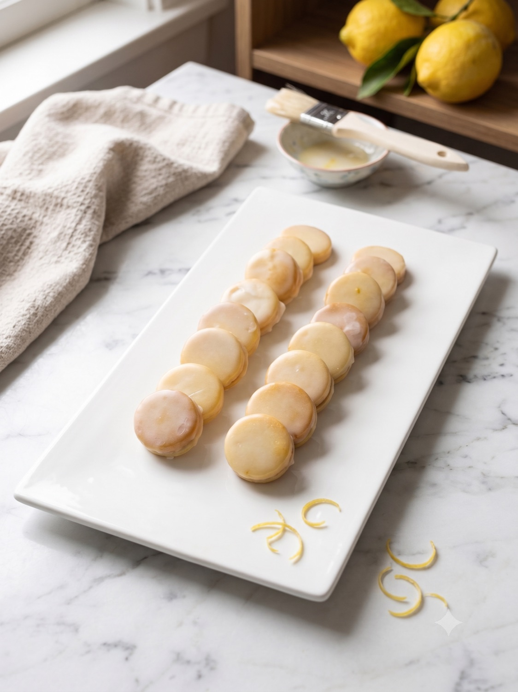
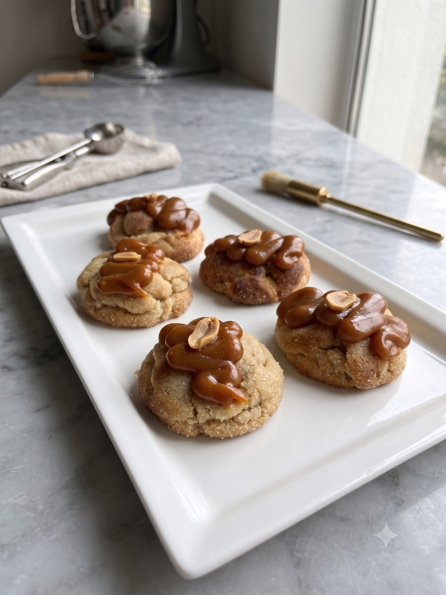
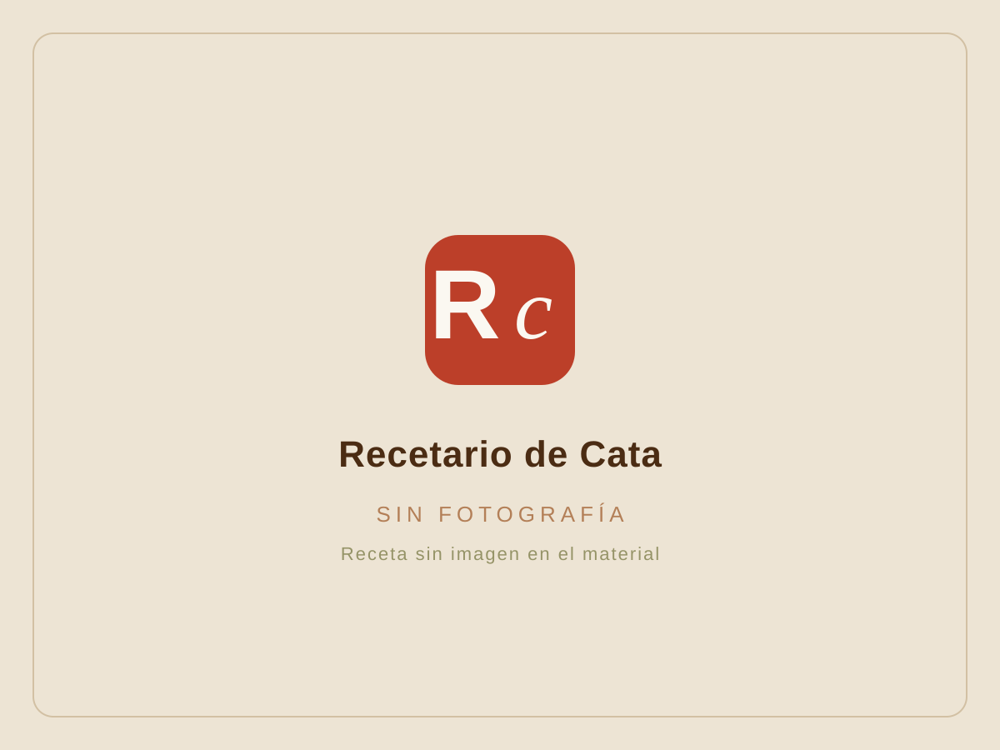
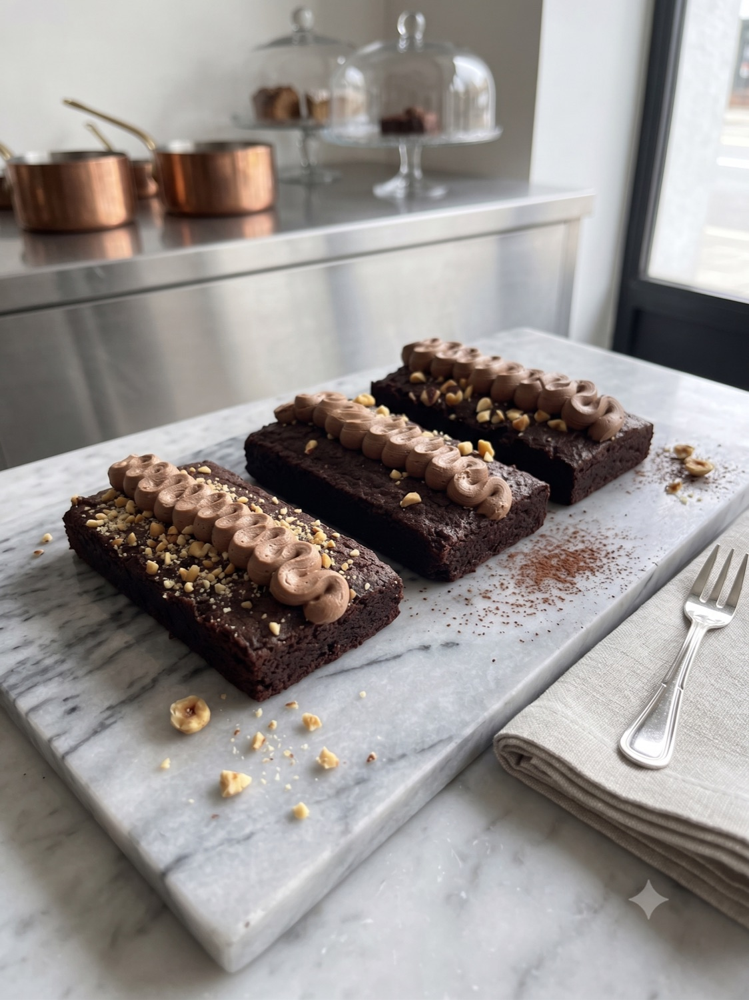
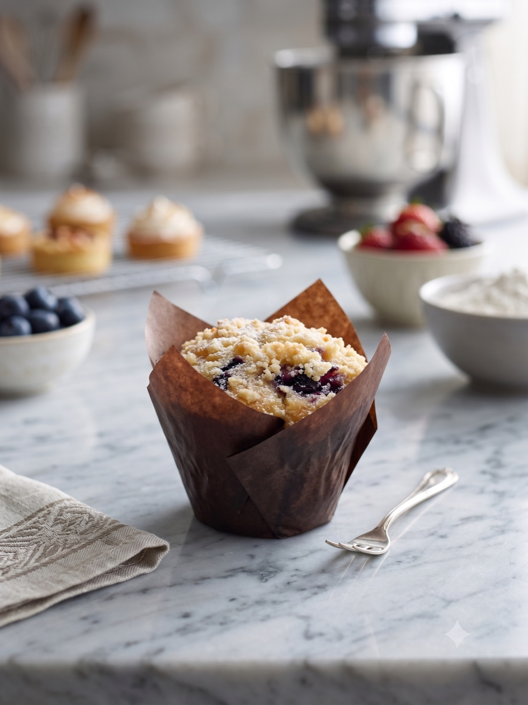

Ecole · Las Claves de la Pastelería · Chef Fernanda Pérez
Básicos exactos
Repositorio de recetas con experiencia práctica y corroborada para conseguir productos estandarizados y de calidad.
Cake cuatro cuartos
Cake clásico de partes iguales con glucosa y pasta de vainilla, terminado con un baño dulce de chocolate y nueces. Reposa en frío antes de hornear.
Recetas del curso
Clase 1 — Cookies (6 de julio) y Clase 2 — Cakes (7 de julio). Cada ficha va al grano: ingredientes al gramo, tiempos y temperaturas, y las anotaciones de clase como tips separados.

Galletas rellenas de mermelada y curd de limón
Galleta sablée estilo «quebrada» rellena de curd y mermelada de limón, terminada con un glaseado brillante. Cuatro elaboraciones que se montan en orden.

Galletas mangueadas
Masa cremosa con harina de almendra que se manguea con boquilla rizada y se termina con chocolate y almendra picada.

Cookies de maní con caramelo
Cookie de mantequilla de maní con frosting de caramelo seco y cabritas. Tres elaboraciones: la cookie, el caramelo y la decoración.

Delicia de frambuesa y sésamo integral
Galleta sablée de sésamo integral rellena de mermelada de frambuesa. Receta bonus, con versión vegana en las notas.

Brownie de avellana con crema de chocolate montada
Brownie de mantequilla noisette y chocolate amargo, coronado con crema inglesa de chocolate montada y virutas. Tres elaboraciones.
Magdalenas francesas bañadas
Magdalena de concha con zeste de limón y miel, bañada en chocolate atemperado. Receta demo, sin fotografía en el material.

Cake cuatro cuartos
Cake clásico de partes iguales con glucosa y pasta de vainilla, terminado con un baño dulce de chocolate y nueces.

Muffins de arándanos
Muffin esponjoso montado en capas con arándanos y coronado con crumble de almendra.
Técnicas y anotaciones
El consejo se toma su espacio. Aquí van las notas de oficio que hacen que una receta salga igual de bien la décima vez que la primera.
Para saber si un cake está cocido, apunta a 85 °C en el centro con termómetro de aguja; en carrot cake o cakes rellenos con fruta, sube a 92 °C. Y en el caramelo seco: fuego medio, echando el azúcar de a poco, y cocina hasta 106 °C.